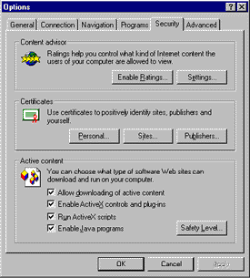
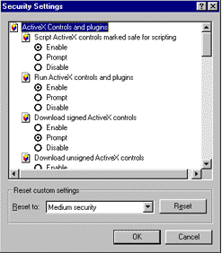
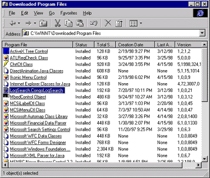

|
| ||
|
| ||
Michael Edwards
April 16, 1998
ContentsBelieve it or not, there's already a lot of online information available to help you figure out how to have your code downloaded over the Web. You just have to know where to look. Fortunately for you, they pay me to surf the Web (go figure), so I learned where to look, and where not to look. I got pretty confused from time to time figuring out how it all works together. So I wrote this article to help sort it all out. I hope you find it helpful, too.
I tried to write this article for all audiences, but some reviewers told me I was crazy. So I went back through and included explanatory material to make it more accessible. Nevertheless, I suspect that if you're just getting started with this stuff, you may have some head-scratching ahead of you (reading this short history of code download may help a little).
For the veterans who just want to get some things straight, I've tried to use descriptive headings (none gratuitously cute) so you can skim for the information you seek.
On the Internet, a download package is a collection of files that can be copied from a Web server to an end-user's machine. Web pages that offer services that need functionality not already provided by built-in browser objects must create (and make available for download) their own objects. A download package can also contain the files necessary to install an entire application. In the simplest case, a Microsoft® Word document could be considered a download package. Typically, however, download packages contain executable program code.
Probably the simplest way to distribute a single-file download package is to add an <A> tag onto your page with an href= attribute referencing the file on your HTTP server:
<A href=mydocument.doc> Download my Microsoft Word document</A>
This method works on both Netscape and Internet Explorer. It causes the file indicated by the href= attribute to be copied to a temporary location on the end-user's computer, and launched within the application associated with the filename extension. For example, if the href= attribute references a file with a .DOC extension, Microsoft Word will open it. File extension association is covered in more detail below.
To have a file with an .EXE extension downloaded, users choose whether to execute it directly from a temporary location, or save it to a location they specify. Of course, there are important security caveats that apply to the download process, otherwise href=deletemycomputer.exe would be possible (we'll cover the security aspects of downloading code more fully later). This method won't work if the .EXE file requires any files not already installed on the computer it's being downloaded to. If you directly reference the filename, you won't be able to use compression techniques to reduce its size (and download time). And you won't be able to enter it in the Windows® Start menu, or register it to be able to be uninstalled later. For any of those capabilities, you need to point the href= attribute at a .CAB file.
Microsoft introduced the Cabinet (CAB) SDK when Internet Explorer 3.0 was released. The Cabinet SDK is a collection of tools and documentation explaining how to create a download package consisting of a single file (called a "cabinet") that contains all the separate files that need to be downloaded. A CAB file usually contains ActiveX® controls or Java packages that are used by a Web page. They can also contain all the files needed to install a stand-alone application. If you are familiar with pkzip file compression technology  , CABs are similar.
, CABs are similar.
A special configuration file (typically named setup.inf) is included in the cabinet that tells the computer how to install the cabinet's contents. Through the configuration file, you indicate where downloaded files should be copied, any registry settings to make (add to the Start menu, register an ActiveX control), software dependencies to check, as well as processor- and architecture-specific CAB locations. .INF configuration files were originally devised for general application setup before being extended to support Internet component download. As a result, there's a specific subset of .INF sections that pertain to making code downloadable, and a bunch of other sections related to installing code from floppy disks. (To avoid getting confused, stick to the docs I specifically refer to below rather than pulling down every shred of information about Cabinet and .INF files you can get your hands on.)
CAB files work on with Internet Explorer 3.x and 4.x. Netscape has its own way of doing things (or we do, depending upon your perspective). CAB files are downloaded via a piece of Internet Explorer called Microsoft Internet Component Download. Internet Component Download is typically invoked by targeting a CAB file in the href= attribute of an <A> tag (to install an application), or <APPLET> and <OBJECT> tags (to install custom components used by a Web page). A self-extracting executable file is an executable CAB file with a piece of code (included with the Cabinet SDK download) inserted at the beginning of a file, and serves as the target of an HREF attribute.
There is more than one place to go to get cabinet documentation and tools. And although choice can be good, it can also be confusing. Before Internet Explorer 3.0, we had some tools and documentation for creating CABs based upon the work we did for Windows 95 (which was delivered via CABs). While we were trying to get Internet Explorer 3.0 out the door, we revamped the tools and docs to ease the process of making code downloadable over the Web, and thus gave birth to the Cabinet SDK.
The ActiveX SDK includes a pre-Cabinet SDK tool called Diamond.exe (which was renamed to Makecab.exe when the Cabinet SDK came along a few months later). The Diamond.exe tool and docs were obtained via a self-extracting executable located in the C:\ActiveX SDK\Bin folder. A second self-extracting executable is used to distribute a library that can be used by third-party vendors to create their own CAB tools. Although you can still get the ActiveX SDK on MSDN Library Online, don't bother. It has been completely replaced by the products below. (So why am I even telling you about it, you ask? For the benefit of those people who might have stumbled across the ActiveX cabinet stuff, and haven't yet figured out they don't need it.)
The Cabinet SDK was released for Internet Explorer 3.0, and is available in the MSDN Online Web Workshop (this page includes introductory and overview information about CABs, links to sites demonstrating how to use CABs, CAB newsgroups and, of course, the Cabinet SDK download itself). You'll notice there are two tools in the Cabinet SDK that can produce cabinet files. MakeCab.EXE is intended for packaging really big, or fairly complicated, stuff (such as CABs that span multiple floppies), and operates based upon an input script. Cabarc.EXE provides a simpler, command-line-based utility for creating CAB files.
You can download the Cabinet SDK from the MSDN Online Web Workshop. You'll find these are the exact same tools from the original Cabinet SDK (right down to the date and time stamps), but they also include the code-signing tools that were updated for Internet Explorer 4.0 that I talk about in the Security section below. This download includes the original Cabinet SDK docs (Cabarc.doc, Cabfmt.doc, Lzxfmt.doc, Mszipfmt.doc and Makecab.doc). Additionally, you should check out the Internet Component Download Workshop topic.
The Microsoft SDK for Java  , includes the original Cabinet SDK and code-signing tools. (If you look closely, though, you'll notice that the tools in the SDK for Java are more recent than those in the Internet Client SDK; this will make more sense when I discuss what changed with Internet Explorer 4.0.) Unlike the Internet Client SDK, the SDK for Java does not ship any of the original Cabinet SDK docs. Instead, since there are important differences in the way Java code is installed compared with ActiveX controls, you'll find all new documentation for the Cabarc utility in Creating and Using Cabinet Files for Java Applets and Libraries
, includes the original Cabinet SDK and code-signing tools. (If you look closely, though, you'll notice that the tools in the SDK for Java are more recent than those in the Internet Client SDK; this will make more sense when I discuss what changed with Internet Explorer 4.0.) Unlike the Internet Client SDK, the SDK for Java does not ship any of the original Cabinet SDK docs. Instead, since there are important differences in the way Java code is installed compared with ActiveX controls, you'll find all new documentation for the Cabarc utility in Creating and Using Cabinet Files for Java Applets and Libraries  . As you would expect, it discusses using cabinets to contain Java applets, and includes libraries to enable downloading for users of Internet Explorer 3.x or Internet Explorer 4.x. You can also get information about using Cabarc in the SDK for Java's Tools Quick Reference
. As you would expect, it discusses using cabinets to contain Java applets, and includes libraries to enable downloading for users of Internet Explorer 3.x or Internet Explorer 4.x. You can also get information about using Cabarc in the SDK for Java's Tools Quick Reference  .
.
Note that the Platform SDK  , available from MSDN Online, also contains the Microsoft SDK for Java, yet another way to get the same stuff.
, available from MSDN Online, also contains the Microsoft SDK for Java, yet another way to get the same stuff.
The major change for users of Internet Explorer 4.x is the ability to use the Open Software Description (OSD) XML format, which I talk about below. The original Cabinet SDK, which you can still download from the MSDN Online Web Workshop, hasn't changed, so you can rest assured that if you use the original Cabinet SDK tools, your cabinets will download whether a user has Internet Explorer 3.x or 4.x.
The Internet Client SDK also ships the original Cabinet SDK. Its files have the same dates and times, and even include the original docs. The problem with the Internet Client SDK (besides scattering topics all over the place) is that it mixed Internet Explorer 4.x-only information in with general cabinet information. This is aggravating, because many of you would appreciate that article, but you might wonder if the .INF information applies only to Internet Explorer 4.x (it doesn't). One more thing: Don't get confused by the references to Diamond.exe in the MICD article. They're typos. Simply replace all references to Diamond.exe with Cabarc.exe, and you'll be fine.
The Microsoft SDK for Java 2.01 ships updated cabinet tools. The Cabarc.exe and Extract.exe utilities now support LZX data compression if you use the -m option (if you do, your CAB will not work for Internet Explorer 3.x users). Cabarc.exe also supports the OSD format, and can use a new package manager technology for Java packages downloaded using Internet Explorer 4.x. The SDK does not ship with the MakeCab.exe utility, and, as I said before, any of the original Cabinet SDK docs.
First read the references I pointed to above. If they don't answer all your questions, then … have at these Knowledge Base articles:
A Frequently Asked Questions for CAB Files  .
.
Q165075  and Q167158
and Q167158  discuss how to use HOOK sections in .INF files for file dependencies.
discuss how to use HOOK sections in .INF files for file dependencies.
Dynamically Adding a Java Package to the Classpath  explains how to use the Java virtual machine to dynamically add a Java package (either ZIP or CAB files) to the classpath before executing applets on a Web page. This method uses an install cab that is compatible with both Internet Explorer 3.x and Internet Explorer 4.x (which means it uses an .INF file and doesn't use LZX compression).
explains how to use the Java virtual machine to dynamically add a Java package (either ZIP or CAB files) to the classpath before executing applets on a Web page. This method uses an install cab that is compatible with both Internet Explorer 3.x and Internet Explorer 4.x (which means it uses an .INF file and doesn't use LZX compression).
Support for Multiple CABs or JARs in the Same APPLET Tag  is an INFO article that explains how to support multiple CABs and JARs in the same <APPLET> tag. (This is an Internet Explorer 4.x-only feature.)
is an INFO article that explains how to support multiple CABs and JARs in the same <APPLET> tag. (This is an Internet Explorer 4.x-only feature.)
Lots of people are running into the same wall trying to use the new Java permissions (even though they are correctly signing their CABs) because they are not asserting their permissions to the security manager at runtime. SecurityExceptionEx Exception Running a Java Applet  sheds some light on this situation.
sheds some light on this situation.
If you need to track down install problems that may be related to what Java VM is running, you might check out Historical List of Shipping Vehicles for Java VM  .
.
HOWTO: Deploying Java in Internet Explorer 4.x and Netscape 4.0  has information about how to use the <APPLET> and <OBJECT> tags for downloading Java packages.
has information about how to use the <APPLET> and <OBJECT> tags for downloading Java packages.
Searching for VJ++ & Java Articles by Keyword  offers help on how to search the Knowledge Base for Java-related stuff yourself.
offers help on how to search the Knowledge Base for Java-related stuff yourself.
Internet Explorer 4.x and our new VM for Java (2.0 and 2.01) introduced new methods to describe code packages for Web download. These methods are based on a new XML vocabulary, Open Software Description (OSD). OSD provides another option for specifying the configuration information in a CAB, essentially replacing the .INF format. To be clear, this new option doesn't change the fact that you still package your download in a CAB, and you can still use .INF files. In fact, you can use both formats in one package. Internet Explorer 4.x will use the OSD file, and Internet Explorer 3.x will use the .INF file.
At this point, you may be asking yourself, "Why change?" Read on, MacDuff.
The .INF syntax is more complicated than OSD because INF was extended to support code download beyond its original purpose: plain ol' Windows application and driver setup. For example, the Internet Code Download service is invoked to process the Internet code download .INF syntax, yet you can also invoke the standard Win95 setup engine (via the "hook" mechanism) to process .INF files using the original, non-Internet, Win95 .INF syntax.
Anyway, the new OSD syntax is simpler to read, and ought to do better at describing the components needed for a download package because that's what it was designed to do. And since OSD is based on XML, it is more flexible than .INF files (XML syntax provides easy extensibility and can describe the hierarchical relationships common among code components). I think that, ultimately, the OSD initiative will improve a developer's ability to manage Internet code download more effectively.
When used in conjunction with another new XML vocabulary, Channel Definition Format (CDF), OSD adds the ability to associate a downloadable component with a software delivery channel. Software Delivery Channels can automatically inform users about updates to your software (see my section on Software Delivery Channels).
At first I didn't think OSD provided anything new for downloading ActiveX controls or .EXE and .DLL files. Now I understand that OSD is a more powerful way to describe the hierarchical relationships inherent in components that depend on each other. This is important, because unless you can describe those dependencies accurately, you can't expect the operating system to be clever about how it treats your component's installation. For example, what do you think the operating system should do when somebody tries to uninstall a component that your component depends on? With .INF, this is a real mess, because it can't describe dependency relationships well. OSD can. Also, the Internet Component Download service offers better control of component dependencies when they are described with OSD because you can a dependency tree (in which the leaf nodes of the tree are installed first) to specify the order in which dependent components are installed.
The new Microsoft Virtual Machine for Java, included with Internet Explorer 4.x and the Microsoft SDK for Java 2.01 (and 2.0), includes several new features that can only be accessed if you use OSD to install your download package.
I think the most important new feature of the new virtual machine for Java is its Java Package Manager (JPM). By managing the process of downloading, the JPM solves the Java namespace problem. If you are familiar with the CLASSPATH method of locating installed Java packages, you are probably also familiar with the mess that occurs when the name of a new Java class collides with the name of an already-installed class. JPM manages a private namespace for each Java download package to make sure that no Java class names in a given package get confused with identical class names that exist in other packages. Users also don't have to reboot after installing a Java package. Plus, the JPM solves the update and uninstall problem. The Java docs do a fine job of explaining why and how to use OSD and the new JPM. Just follow the links I provide below.
Microsoft's Java team also created a new cabinet creation tool, DUBUILD (where the DU comes from Distribution Unit), to distribute Java applets and libraries with an OSD configuration file. This tool will create a CAB and OSD file for your Java applet or library. Further, it can automatically register ActiveX controls as JavaBeans, although you'll still have to package them for download.
The DUBUILD utility is explained in detail in the Using DUBUILD  article in the Tools section of the Microsoft SDK for Java 2.01, and briefly in the Tools Quick Reference
article in the Tools section of the Microsoft SDK for Java 2.01, and briefly in the Tools Quick Reference .
.
The Popular Topics for Java  page is a good place to visit frequently, as the Java product support folks frequently update this page with important new KB articles.
page is a good place to visit frequently, as the Java product support folks frequently update this page with important new KB articles.
The Internet Client SDK has several articles about OSD, including an overview and reference on the OSD markup syntax (with samples).x.
Another Knowledge Base article, HOWTO: Automatically Update the Microsoft VM for Java  , is great if your Java package needs a certain version of the VM for Java to run correctly.
, is great if your Java package needs a certain version of the VM for Java to run correctly.
Active Setup is an Internet Explorer 4.x-only vehicle for downloading code on the Web. It is based on the CAB format, and is useful for really large downloads that would benefit from being broken up into multiple CABs. Active Setup is also capable of restarting from where it left off when an Internet connection gets toasted in the middle of a download. Internet Explorer 4.x and the Internet Client SDK both use Active Setup for their downloads.
I found this Description of the Active Setup Log.txt File  in the Knowledge Base.
in the Knowledge Base.
FTP has been around "forever". It is a protocol for transferring files from one computer to another over the Internet. If you can put your file on an FTP server (Microsoft includes an FTP server facility in Windows NT Server  , and there are lots of public-domain FTP servers), folks can download it just by pointing their browser at the FTP URL.
, and there are lots of public-domain FTP servers), folks can download it just by pointing their browser at the FTP URL.
For example, the Microsoft Software Library  (look at the URL for this link and you'll notice it starts with ftp:// instead of http://) is a storehouse for files that are referenced by the Microsoft Knowledge Base (see Knowledge Is Power: Inside the Microsoft KB). The files in this library are located on a server that can "talk FTP" with Internet Explorer (or any other client program that can use FTP).
(look at the URL for this link and you'll notice it starts with ftp:// instead of http://) is a storehouse for files that are referenced by the Microsoft Knowledge Base (see Knowledge Is Power: Inside the Microsoft KB). The files in this library are located on a server that can "talk FTP" with Internet Explorer (or any other client program that can use FTP).
If you want to use FTP, the Internet Client SDK article TARGET="_top">FTP Sessions shows how Win32® Internet (WinInet) functions can be used to navigate and manipulate directories and files on an FTP server. And here's an Internet Client SDK reference piece about the WinInet functions themselves. If you're more of a VB person, there's some sample code in the Knowledge Base article Implementing FTP Using WinInet API from VB  .
.
Many companies offer their own tools for packaging code. SoftSeek has a listing of File Compression and Zipping utilities  that includes the well-known WinZip products
that includes the well-known WinZip products  . Yahoo has a similar category, and I'm sure other search services compile information as well. There is also the Package for the Web
. Yahoo has a similar category, and I'm sure other search services compile information as well. There is also the Package for the Web  product (you'll recognize it from the familiar blue-wash background).
product (you'll recognize it from the familiar blue-wash background).
On the Internet, good security means:
In this context, good security is a joint venture between your Web site and Microsoft. Microsoft's role is providing a useful security model, and the information and tools you need to make adequate use of that model, to provide a secure experience for your customer. Your role is to take security very seriously, to understand the security implications of your site's architecture and implementation, and to take the proper steps to ensure the best possible experience for your customers without compromising good security.
Microsoft has worked hard to make sure that Web pages delivered using standard HTML cannot ever compromise your security. But many of the more interesting things you can offer on Web pages cannot be achieved with HTML - they need to use plug-in components (ActiveX controls or Java applets) that can directly access local resources on your computer. We make sure that any Microsoft-provided components (whether they are pre-installed on your computer, or are downloaded later) can never be used by a rogue Web page to compromise your security. In order to provide this security guarantee for our components, we have to implement them according to well-documented programming guidelines. However, while we can be sure that our components are implemented "correctly", we can't force everybody to use secure programming practices (even though we provide lots of docs and samples that show how). Since we can't police the implementation of every plug-in component on the Web, an important part of Microsoft's security model allows users to establish exactly who is responsible for producing the components Web pages request to download. Knowing who produced a component allows users to make informed decisions regarding whom they will trust.
On the Internet, you can't hold a shrink-wrapped box of software in your hand to verify its legitimacy. Hacker pages can exploit this by falsely representing a software download package as having been published by a reputable publisher. So even if a trustworthy publisher legitimately produced the package, how can you determine whether it's been tampered with?
Digital code-signing addresses this problem by providing the Internet equivalent of shrink-wrapped packaging and tamper-proof seals. Digital code-signing uses encryption technology to encode a download package with a digital certificate that indicates the publisher's name and a digital ID to verify a package's contents. The encryption technology used to produce this digital "signature" makes it essentially impossible for a hacker to alter a digitally-signed download package without leaving a trace.
Code-signing is surprisingly simple (really!). A short time ago, every time I thought I understood it, I would go off and try to explain it to somebody, get partway through the explanation, and my voice would sort of trail off …. "Now, let's see, how did that work again?" But then I saw Michael Howard's really good talk at Web Tech Ed. Michael really did make this stuff simple -- and you can see his talk reproduced in our Training area!
Authenticode™, the formal name for the encryption technology Microsoft uses for digital code signing, is based upon an encryption algorithm called "public key technology". Authenticode 1.0 was first introduced for Microsoft Internet Explorer 3.0. In the summer of 1997 Microsoft introduced Authenticode 2.0, and provided the update through a separate download for Internet Explorer 3.0 and 3.01 (it was directly incorporated into the version 3.02 download on June 16, 1997). Internet Explorer 4.x also uses Authenticode 2.0. Authenticode 2.0 provided two important new features: timestamping and the ability to revoke a publisher's digital certificate.
Microsoft provides a set of tools that create a digital certificate (a publisher's digital credentials) and encode it inside a CAB file. Certificates can also be placed directly into the resource fork (which can hold bitmaps, icons, and related stuff) of an executable file.
The ActiveX SDK provides tools to digitally sign a download package or executable file (creating a download package was discussed above). They were originally created for Authenticode 1.0, but were updated for Authenticode 2.0 last summer (if you have downloaded the ActiveX SDK since then, you've got the latest version). The SBN site contains lots of information about the Authenticode 2.0 update, including the means for Web sites to detect whether a browser should be updated to Authenticode 2.0. The ActiveX SDK code-signing tools cover all versions of Internet Explorer 3.x and Internet Explorer 4.x.
The Developer tools topic in the Tools area includes MS Authenticode sub-topics where you can download the code-signing tools.
The Microsoft SDK for Java  , like the Internet Client SDK, includes code-signing tools (updated for Internet Explorer 4.0) that are installed in the C:\SDK-Java.20\Bin\PackSign folder. You might notice the versions of these tools are newer than those in the Internet Client SDK, but I have been assured there are no significant differences between them. The updated tools for Internet Explorer 4.x can come from either source; just don't mix and match them. (I'd decide which tool set to use based on whether I was creating a Java or native-code download.)
, like the Internet Client SDK, includes code-signing tools (updated for Internet Explorer 4.0) that are installed in the C:\SDK-Java.20\Bin\PackSign folder. You might notice the versions of these tools are newer than those in the Internet Client SDK, but I have been assured there are no significant differences between them. The updated tools for Internet Explorer 4.x can come from either source; just don't mix and match them. (I'd decide which tool set to use based on whether I was creating a Java or native-code download.)
MSDN Library Online picks up all Microsoft SDK documentation, so don't get confused by what is actually just another place to get the above SDK documentation.
Two changes took place after the Internet Explorer 3.02 update to the ActiveX SDK code-signing tools. Most people will only care about the updates that were made to support the new Java Package Manager (JPM). But some of you may want to use the new cryptographic features added for CrpytoAPI 2.0. If so, you might also like to know about the changes that were made to streamline the command-line options.
But do you really need to upgrade to the code-signing tools for Internet Explorer 4.x? Put another way, "if it ain't broke, why fix it?" If you don't care about Java, and you're just using standard digital certificates, then you might as well stick with what you have (your ActiveX SDK tools will produce signed CABs that work just fine on both Internet Explorer 4.x and Internet Explorer 3.x).
The changes for native code downloads support new cryptographic features in the July 1997 release of CryptoAPI 2.0 in (between the Internet Explorer 3.02 update and the final version of Internet Explorer 4.0). You can use these new features without losing Internet Explorer 3.x compatibility. I won't go into the details here, instead refer to the Internet Client SDK overview of code signing in the Component Development/Signing and Checking Code with Authenticode topic. The article includes a detailed description of each tool, and the command-line flag changes between these tools and those offered in the ActiveX SDK. To be honest, I'm not too knowledgeable on the details to the cryptographic changes, and the Internet Client SDK docs are sketchy on what exactly all these new flags do (in fact, they refer you to the CryptoAPI 2.0 docs for additional background). If you want to reach the docs the SDK refers to (they were broken with the January release of MSDN Library), go here  instead.
instead.
The changes to the tools for Java reflect the new trust-based security model. You now have the ability to specify fine-grained permissions into your Java packages. The security model for Internet Explorer 3.x was all-or-nothing (you could either do anything you please with local resources, or you were confined to the sandbox). Note that using this new feature doesn't preclude your Java code from running on both Internet Explorer 3.x (with the new Authenticode patch  ) and 4.x. A Java package signed with specific permissions viewed with Internet Explorer 3.x will look just like a "normal" signed Java package that asks for full permissions. Of course, you'll have to use a compatible download package (don't use the new LZX compression option with Internet Explorer 3.x!), and you'll have to handle exceptions in the Internet Explorer 3.x Java VM if you reference the new security classes. The trust-based security model is explained in the new Java docs (start with the Trust-based Security for Java
) and 4.x. A Java package signed with specific permissions viewed with Internet Explorer 3.x will look just like a "normal" signed Java package that asks for full permissions. Of course, you'll have to use a compatible download package (don't use the new LZX compression option with Internet Explorer 3.x!), and you'll have to handle exceptions in the Internet Explorer 3.x Java VM if you reference the new security classes. The trust-based security model is explained in the new Java docs (start with the Trust-based Security for Java  article that is included in the "About Tools" topic in the Microsoft SDK for Java 2.01 documentation
article that is included in the "About Tools" topic in the Microsoft SDK for Java 2.01 documentation  ).
).
The good news is that you don't have to do two completely different things to support secure controls on both Internet Explorer and Netscape Navigator. The bad news is that there are still some significant differences.
First, the Authenticode-compatible digital certificates you use with Internet Explorer won't work with Netscape's browser. Although Microsoft and Netscape digital certificates are each based on the X.509 industry standard, they use incompatible extensions and treat each other's certificates as invalid. Does that mean you are screwed? No! But you will have to get two certificates, one for Microsoft and another one for Netscape.
Second, Netscape uses a different model for developing and loading controls on Web pages that is incompatible with ActiveX controls.
I don't know much more than that, but feel free to poke around a bit on the Netscape developer pages  .
.
MSDN Online's Web Workshop has comprehensive material on Security & Cryptography, and additional details on obtaining a digital certificate on its Digital Certificate for Authenticode page.
If you still have an ache to learn about security, check out these Internet security articles from MSDN Library Online. (Note that there is some overlap between these articles and the MSDN Online Web Workshop pages.)
Mike Pietraszak wrote an article for the January issue of MIND magazine, Using J/Direct to Call the Win32 API from Java  , that includes an example of how to use DUBUILD.EXE and SIGNCODE.EXE to create signed Java packages for Internet Explorer 4.x.0X. (You'll have to get a hard copy of the magazine for the full article.)
, that includes an example of how to use DUBUILD.EXE and SIGNCODE.EXE to create signed Java packages for Internet Explorer 4.x.0X. (You'll have to get a hard copy of the magazine for the full article.)
Paul Johns' Signing and Marking ActiveX Controls  in the MSDN Library Online is a must.
in the MSDN Library Online is a must.
You can find several articles in the Knowledge Base  , such as such as this article about digitally signing your Visual Basic® 5.0 application
, such as such as this article about digitally signing your Visual Basic® 5.0 application  , by searching for variations on "digital" and "signing".
, by searching for variations on "digital" and "signing".
A digital signature guarantees secure delivery to the client computer, but by itself doesn't say anything about whether it's safe to run an ActiveX control. The problem is that, once a signed control is downloaded to an end-user's computer, it can be re-used by any other page that knows about it, without the end-user's knowledge. So you could write a control that used local resources in a benign fashion, but somebody else could figure out how to use it maliciously. The extent to which a hacker could damage an end-user's machine by making unauthorized and unintended use of your control depends upon whether there are features in your control that can be accessed via script on a Web page that directly or indirectly access or modify system resources. For example, if you had a method on your control that deleted some local files, and the filename to be deleted was passed via script, you've offered an open invitation to hackers everywhere. You can prevent an attack of this sort. For example, make sure your control can only be loaded from your domain (so that only you can use it).
This form of cyber-attack is referred to as "repurposing", and there are other forms as well. Fortunately, there is lots of documentation that explains how to safeguard your controls from all known methods of attack (see below).
To learn more about how to safeguard your controls from being misused, start with the Internet Client SDK article Safe Initialization and Scripting for ActiveX Controls.
If you are using ATL to create ActiveX controls, check out Signing and Marking ActiveX Controls with ATL  .
.
If you are using Visual Basic to create ActiveX controls, these articles are useful: Deploying ActiveX Controls on the Web  and Microsoft Visual Basic, Control Creation Edition, Version 5.0, Control Hosting Hints
and Microsoft Visual Basic, Control Creation Edition, Version 5.0, Control Hosting Hints  .
.
The Microsoft Knowledge Base has several articles, including Implementing IObjectSafety in an ActiveX Control  . If you've never used Microsoft's Support Online site, check out Jason Strayer's Knowledge Is Power: Inside the Microsoft KB. You'll be glad you did.
. If you've never used Microsoft's Support Online site, check out Jason Strayer's Knowledge Is Power: Inside the Microsoft KB. You'll be glad you did.
Paul Johns' Signing and Marking ActiveX Controls, as mentioned above, is in the MSDN Library Online.
The Microsoft SDK for Java 2.01 has several articles about securing your Java code library.
So far we've talked about the part of making code downloadable that affects developers. Now let's talk about controlling whether components are allowed to download and whether Web pages are allowed to script them. This is the part of the security model that is in the hands of the end-user.
There are some fairly significant changes to the way users affect the security settings for Internet Explorer 4.x. The ones most Web authors will care about concern the changes to the High, Medium and Low security defaults, and the new security zone model, where Web sites are classified into different zones, each with their own security setting.
In Internet Explorer 3.02, users control whether "active content" (ActiveX or Java stuff) will download and run using radio button settings in the Security tab in the Options… dialog accessed from the View menu.

Figure 1. Internet Explorer 3.02 security options
Unfortunately, it isn't super-clear to most users what those settings mean or do. The Safety Level… option button opens a dialog that makes things simpler by offering a simple choice between High, Medium and Low security levels, but the dialog is a level deeper, and most users don't even find it. Plus, just try to figure out how the High, Medium and Low settings affect the toggle switches on the Security tab. Eventually, with a bit of trial-and-error, I was able to figure out that the four Active content checkbox settings act to further restrict the High, Medium and Low settings in the Safety Level… dialog. But they cannot be used to lift restrictions that may be already imposed. For example, you can uncheck Allow downloading of active content in order to prevent ActiveX controls from being downloaded in the Low safely level, but leaving the same setting checked will not allow unsigned controls to download in the High safety level.
For Internet Explorer 4.x, the High, Medium, and Low security level options are shown on the main Security tab of the Internet Options… dialog in the View menu. This time, the fine-grained toggle settings are obscured in a deeper dialog. So most users will never mess with the new Security Settings dialog and the multiple security options available by selecting the new Custom (for expert users) option:

Figure 2. Internet Explorer 4.0 custom security settings dialog
The Security Settings dialog options allow you to fine-tune the settings for the current security zone (the one selected in the Security tab of the Internet Options… dialog). Notice the Reset custom settings label. It lets you reset the option buttons back to the defaults for High, Medium, or Low security. This is also useful in figuring out exactly what the different default settings are to begin with.
If you are already familiar with the default settings for Internet Explorer 3.x, note the following important changes in Internet Explorer 4.x:
These user-interface changes are part of an ongoing effort to make security decisions easier for users. For example, a cool thing with the new security-zones deal (from a user standpoint) is that you can lump the sites you trust into the "Trusted Sites" zone (where security presumably isn't an issue). Maybe this is obvious, but I think the implication is that users won't take such a binary view towards downloading ("never download anything" vs. "always download everything"). Good security will then become more important for all sites to do well (because users will better understand and expect it).
The Internet Explorer 4.x product pages include a high-level overview of new security features in Internet Explorer 4.x.
The Web Workshop has a Security Zones Overview.
Note: If you are looking for more granular security settings for controlling Java execution on Internet Explorer 4.x, check the "Custom" radio button in the Java Permissions area of the Security Settings dialog. A Java Custom Settings… button will become visible on the lower left corner of the dialog. Clicking that button whisks you off to a vast sea of fine-grained Java security settings.
Software delivery channels combine two new XML vocabularies to automatically advertise and update software over the Internet.
Creating Software Update Channels was originally published in the Internet Client SDK for the September 1997 release of Internet Explorer 4.x. There were a few enhancements for the Internet Explorer 4.01 release that were discussed in an article by Ray Sun, Software Update Channels in Internet Explorer 4.01, on the MSDN Online Web Workshop. A detailed list of the changes in OSD appear in this Open Software Description (OSD) overview article in the Internet Client SDK refresh of December 19th, 1997.
MIND magazine's December 1997 issue included an article on software delivery channels  by John Grieb (only a portion of it is accessible online, however).
by John Grieb (only a portion of it is accessible online, however).
For information on XML in general, pay a visit to the XML section of the MSDN Online Web Workshop.
The Windows registry keeps track of which programs own various filename extensions and media types (MIME), and is how Windows knows what to do when users open a file in the Windows Explorer, on their desktop, or as an href= attribute of the <A> tag. This process is explained more fully in Associating a File Type with an Application from the MSDN Online Library.
Teri Schiele's definitive Windows Setup article talks about known filename extensions (in case you are thinking of creating a new one), and how to register an "open" action with your own filename extension in the setup.inf file.
There's also Registering an ActiveX Object as the Player for a Media Type, about registering ActiveX objects with a MIME type or a filename extension. (Internet Explorer first looks to see if somebody has registered for the MIME type before checking for a filename extension association.)
If you think associating your application with a Media type is a cool idea, you might be interested in creating a new protocol handler. In Internet Explorer, protocol handlers are to URLs what MIME-type handlers are to HREFs. In other words, you can register a URL protocol with an associated application so that all attempts to navigate to a URL using that protocol launch the application. That is how the mailto: and news: URLs work. Or you may have noticed the mk: protocol that MSDN and Visual Studio™ are now using.
The Internet Client SDK has articles on Pluggable Protocols as well as predefined protocols.
Debugging problems with code download can be real frustrating because there simply aren't a lot of tools or information available. If you have any tips you'd like to pass on, please send them my way.
Software dependency is a problem just about everybody runs into once. The problem occurs when your downloaded application fails to load because you dynamically linked to a component that is not already installed or up-to-date. For example, if you built an MFC application for download, you are supposed to include a section in the setup.inf stating that you depend on the MFC library. Then Internet Component Download can check to be sure the library is installed, and, if not, can install it from the instructions in your setup.inf (a Knowledge Base article, HOWTO: Packaging MFC Controls for Use Over the Internet  , describes this in more detail). Active Template Library (ATL) developers may have run into this, because the ATL registrar code is located in a separate DLL (as explained in yet another Knowledge Base article, DOC: Instructions for Statically Linking to Registrar Code
, describes this in more detail). Active Template Library (ATL) developers may have run into this, because the ATL registrar code is located in a separate DLL (as explained in yet another Knowledge Base article, DOC: Instructions for Statically Linking to Registrar Code  ). You can figure out what DLLs you are inadvertently linking to by using the -dump option of the link utility (look at the "export" section). Or, even easier, just use QuickView (on the context menu for executable files) to see all the imports.
). You can figure out what DLLs you are inadvertently linking to by using the -dump option of the link utility (look at the "export" section). Or, even easier, just use QuickView (on the context menu for executable files) to see all the imports.
Deleting test certificates is another one that bit me. I kept clicking through user interface dialogs, looking for a way to delete all the old test certificates I had installed over the last several months. It turns out you can't do it in the user interface, but you can using the certmgr.exe code-signing utility (see the Signing and Checking Code with Authenticode page in the Internet Client SDK).
You might also check out the HOWTO: Debugging Code Download Activity in IE: Knowledge Base  article. This article includes information about utilities that can provide sort of an accounting trail of the download process (to find out what went wrong with a download).
article. This article includes information about utilities that can provide sort of an accounting trail of the download process (to find out what went wrong with a download).
There is also some help in the "Component Packaging" and "Control Development" sections of the Knowledge Base article INFO: FAQ on Developing with the Internet Client SDK  .
.
And don't forget about uninstall. As important as uninstall support is for applications, you would think it would be better-supported for Internet components. When components are downloaded via Microsoft Internet Component Download (CABs and Java classes that are referenced by <OBJECT> or <APPLET> tags), they are installed in the Windows\occache folder (unless the default install location is overridden by a CAB's setup configuration file). Components installed in the occache are registered using a new "Module Usage" section of the registry.
There is no publicly-documented or supported way to programmatically uninstall downloaded Internet components. However, you can do it manually. There is a Windows shell extension associated with the Windows\occache folder called Downloaded Program Files located in the Windows folder. It presents another way to view the files there, and offers additional property information not normally available for files in a folder. For example, you can uninstall downloaded components by right-clicking in the Program File column in the Windows\Downloaded Program Files folder and selecting Remove Program File.

Figure 3. Downloaded Program Files shell extension
I went over a lot of stuff in this article. I talked about the technologies available to build a download package, and there are many. I discussed Microsoft's approach to security, and how you can empower customers to verify whether a download package was actually published by your company (and therefore "trustworthy"). I talked about how security works in different versions of Internet Explorer, so users can protect themselves from rogue Web sites. I explained how to find Microsoft documents and tools for Internet Component Download, and what changed (and didn't) when Internet Explorer 3.x became Internet Explorer 4.x.
All the same, if you happen to think the process of making your code available over the Internet is harder than it should be, you are probably right. But you might also take solace in the fact that tools are improving to make it easier. For example, Visual Studio® 6.0 includes new packaging and deployment features that I wrote about in "Installing Windows Applications via the Web with Visual Studio 6.0". And I expect more work in this area will be accomplished in future versions of the Visual Studio product.
Good luck, and happy downloading.
Did you find this material useful? Gripes? Compliments? Suggestions for other articles? Write us!
© 1999 Microsoft Corporation. All rights reserved. Terms of use.